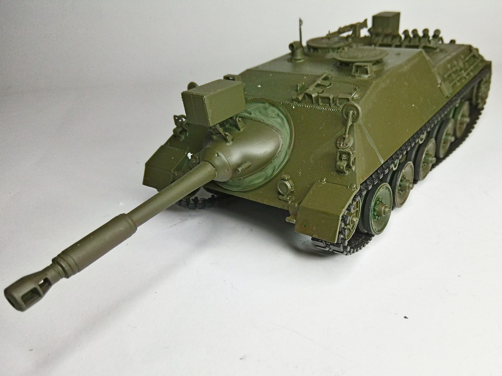
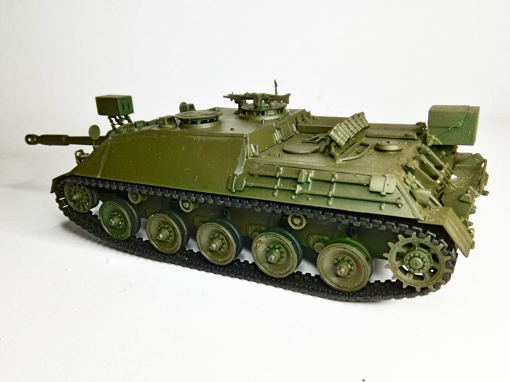

Mezzi militari · scale model archive
Kanonenjagdpanzer
Kanonenjagdpanzer — Kit: Revell, Scale: 1/35. More info on kit: https://kitchecker.com/reviews_2019_1/revell_03276.htm #1/35 #Revell #Kanonenjagdpanzer

Photo gallery

English description
More info on kit: https://kitchecker.com/reviews_2019_1/revell_03276.htm
#1/35 #Revell #Kanonenjagdpanzer
Descrizione italiana
Maggiori informazioni sul kit: https://kitchecker.com/reviews_2019_1/revell_03276.htm